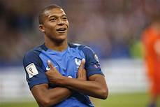
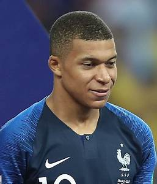
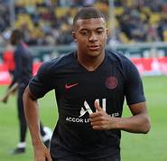

KYLIAN MBAPPE
PERSONAL PROFILE
Kylian Mbappe is 21 years old.He is a soccer player
He started my senior career playing for Ligue 1 club Monaco, where he made my professional debut in 2015, aged 16. With them, he won a Ligue 1 title, Ligue 1 Young Player of the Year, and the Golden Boy award. In 2017, Mbappé signed for league rivals Paris Saint-Germain on an initial loan, which was made permanent a year later in a transfer worth €180 million, making him the second-most expensive player, and most expensive teenager, ever.[4] With PSG, Mbappé won two Ligue 1 titles, a Coupe de France, has finished as Ligue 1 top scorer and won Ligue 1 Player of the Year, and is the eighth-highest goalscorer in the club history.n addition to his technical skills, Mbappé is also highly regarded for his outstanding pace and close ball control when dribbling at speed, as well as his intelligent movement and ability to beat the defensive line by making attacking runs into space both on and off the ball

Mbappé has a sponsorship deal with sportswear and equipment supplier Nike. In 2017, his prodigious talent saw Nike launch his own personalised football boots at age 18, the Kylian Mbappé Nike Hypervenom 3.[96] In 2018, he unveiled the Nike Mercurial Superfly VI boots which were inspired by the R9 Mercurial boots of former Brazilian striker Ronaldo.Mbappé features in EA Sports' FIFA video game series: on FIFA 18 he had the highest potential rating of 94.[98][99] His trademark goal celebration – posing with his arms folded and hands tucked under his armpits – was inspired by his younger brother Ethan who would celebrate in this manner when beating Kylian at FIFA.n addition to his technical skills, Mbappé is also highly regarded for his outstanding pace and close ball control when dribbling at speed, as well as his intelligent movement and ability to beat the defensive line by making attacking runs into space both on and off the ball; his ability to time his runs enables him to stretch opposing defences, and also make him a dangerous offensive threat on counter-attacks.[77][86][89][90] Regarding Mbappé's ability to run at defences, former France international Nicolas Anelka stated, "He reminds me of Ronaldo of the 1996 Olympics. He has the characteristics of a world-class player and he must manage them properly. If he follows Ronaldo's career, 'O Phenomenon', he will be one of the legends that has made history in the sport

PERSONAL LIFE
SPONSORSHIPS
Mbappé features in EA Sports' FIFA video game series: on FIFA 18 he had the highest potential rating of 94.[98][99] His trademark goal celebration – posing with his arms folded and hands tucked under his armpits – was inspired by his younger brother Ethan who would celebrate in this manner when beating Kylian at FIFA.[94][100] The celebration appears in FIFA 19
For more information,check out: Kylian Mbappe